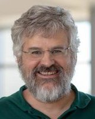
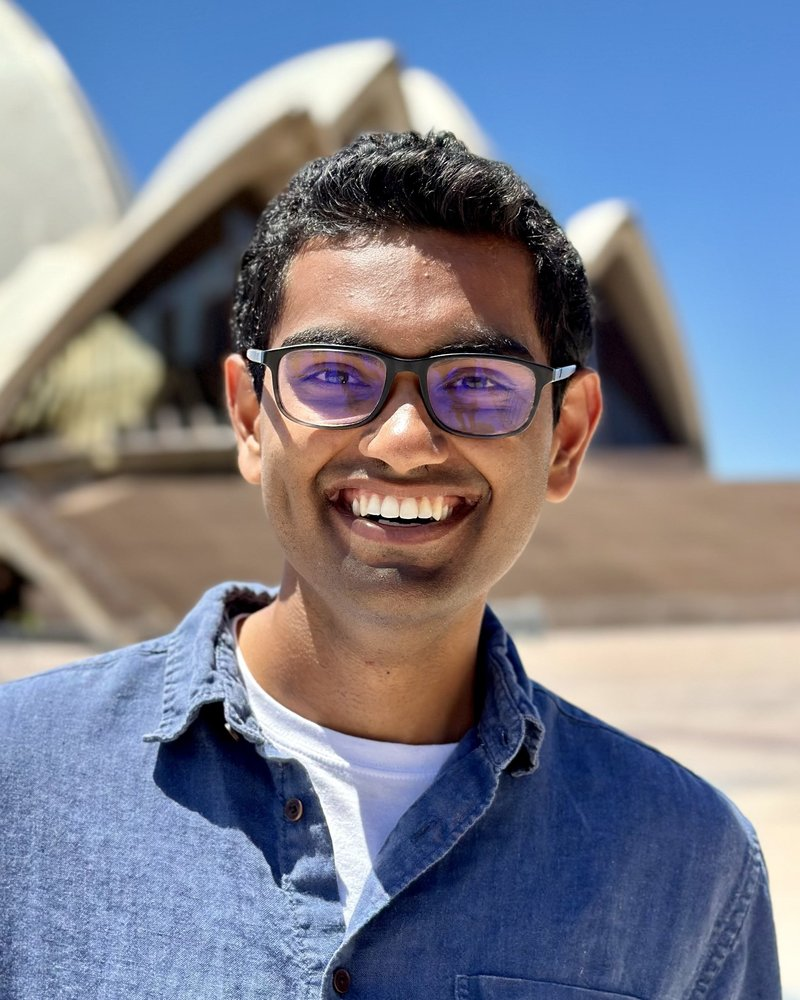
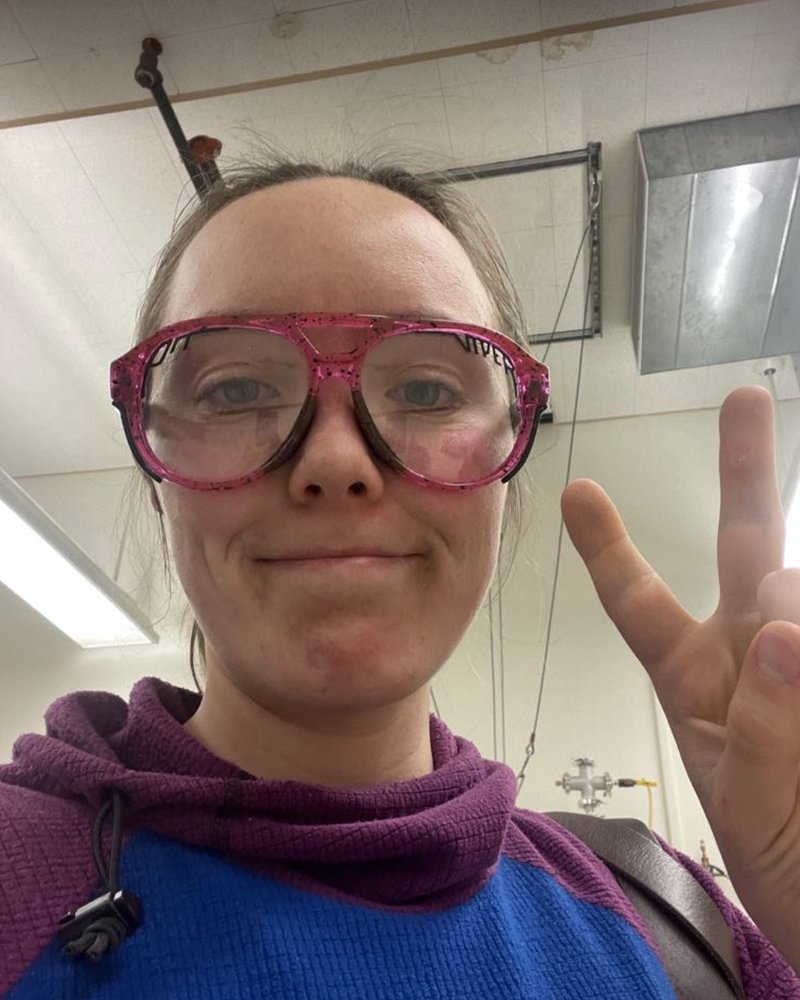
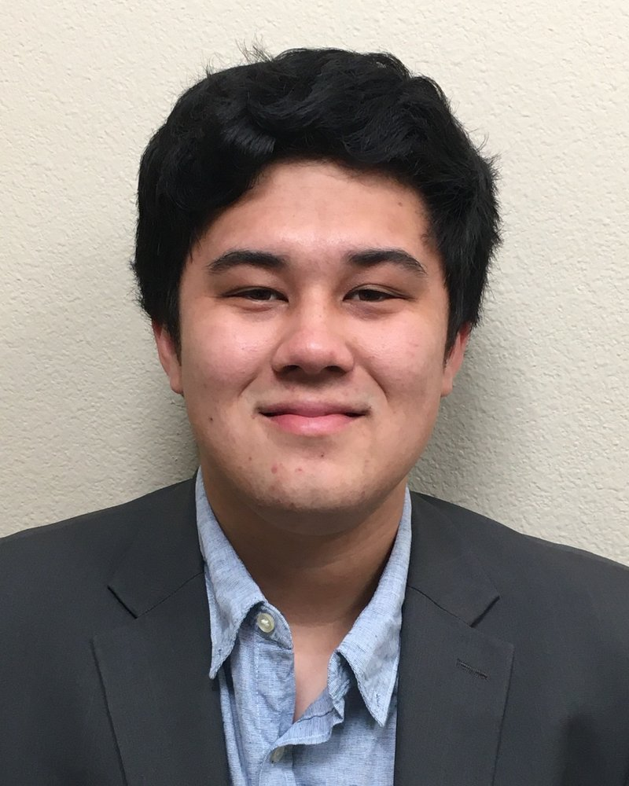
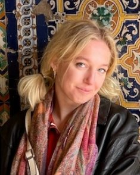
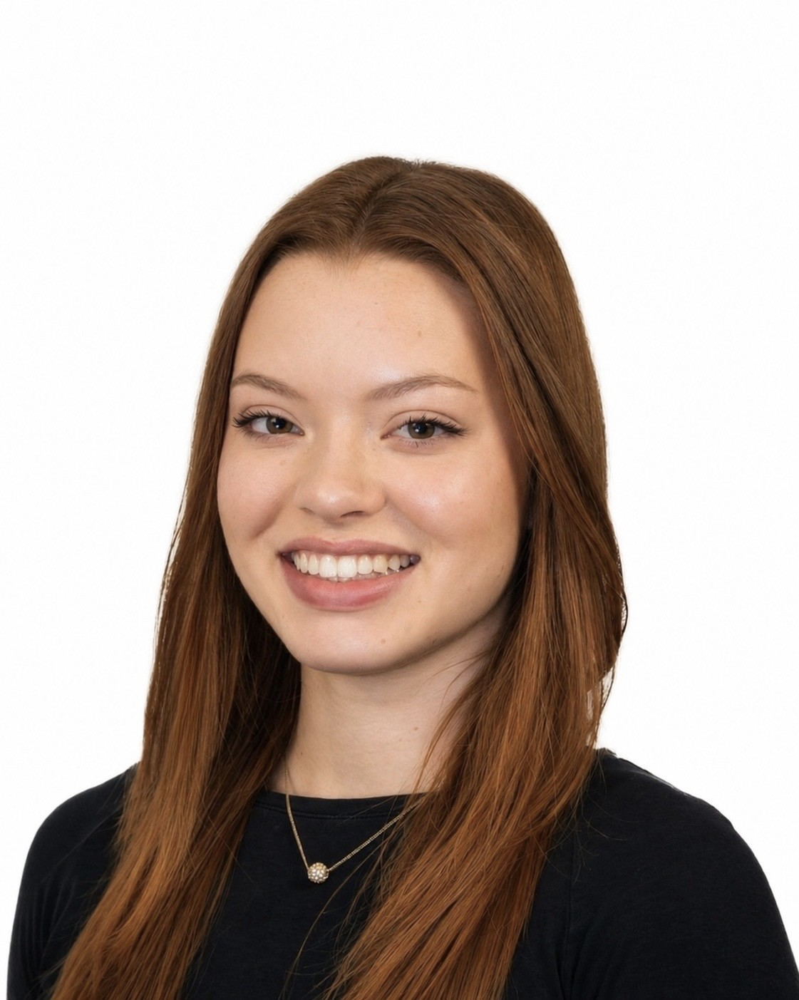
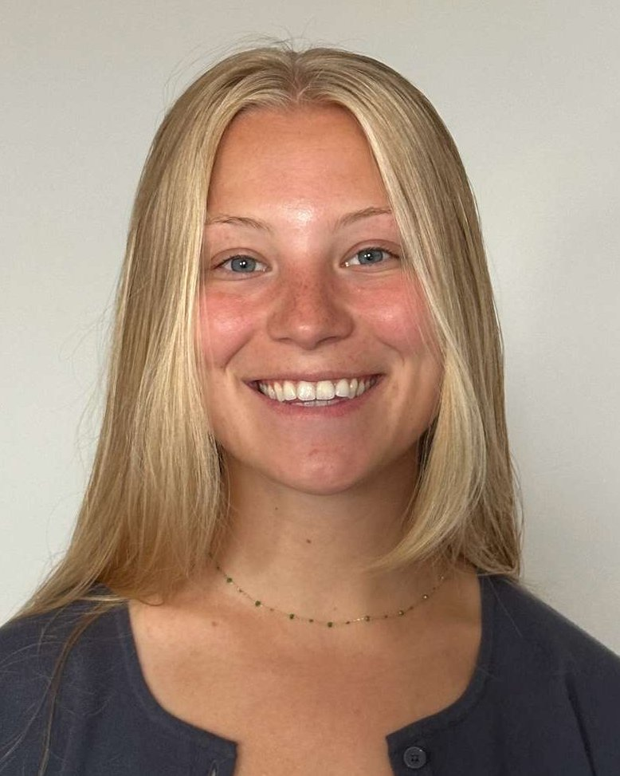

People
Principal Investigator

Kent Irwin
Professor of Physics, of Particle Physics and Astrophysics, and of Photon Science
Research Scientists
Postdoctoral Scholars
Graduate Students

Jyotirmai Singh
Ph.D. Physics Candidate

Cady van Assendelft
Ph.D. Physics Candidate

Jason Corbin
Ph.D. Physics Candidate

Dean Wright
Ph.D. Physics Student

Victoria (Tori) Ankel
Ph.D. Physics Candidate

Ameya Kunder
Ph.D. Physics Candidate

Christina Bell
Ph.D. Physics Candidate

Meghan Marangola
Ph.D. Physics Student
Former Members
- Dale Li Former Staff Scientist at SLAC, currently at PsiQuantum
- Hsiao-Mei “Sherry” Cho Former Staff Scientist at SLAC, currently at Qolab
- Betty Young Former Visiting Scholar at Stanford, currently a Professor of Physics at Santa Clara University
- Arran Phipps Former Postdoctoral Researcher / Kavli Fellow at Stanford, currently an Associate Professor of Physics at California State University, East Bay
- Yanru Song Former Postdoctoral Researcher
- Chiara Salemi Former Postdoctoral Researcher, currently an Assistant Professor at UC Berkeley
- Chelsea Bartram Former Postdoctoral Researcher, currently a Panofsky Fellow / Associate Scientist at SLAC National Accelerator Laboratory
- Saptarshi Chaudhuri Former Graduate Student, currently an Assistant Professor at Princeton University
- Stephen Kuenstner Former Graduate Student, currently a Postdoctoral Researcher at the University of Washington
- Charles (Jamie) Titus Former Graduate Student, currently at NIST
- Carl Dawson Former Research Assistant, currently at Upstart
- John Mark Kreikebaum Former Research Assistant, currently a Research Scientist at Google Quantum AI
- Max Silva-Feaver Former Research Assistant, currently a Postdoctoral Researcher at Yale University
- Nicholas Rapidis Former Graduate Student, currently a Postdoctoral Researcher at Yale University
- Abdullah Al Shirawi Former Undergraduate Student, currently a Ph.D. Student at the University of Chicago